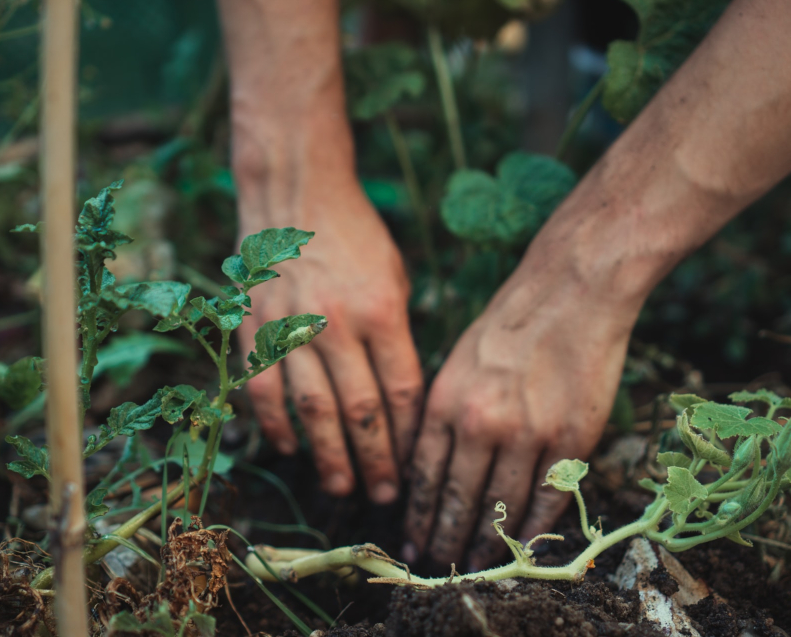
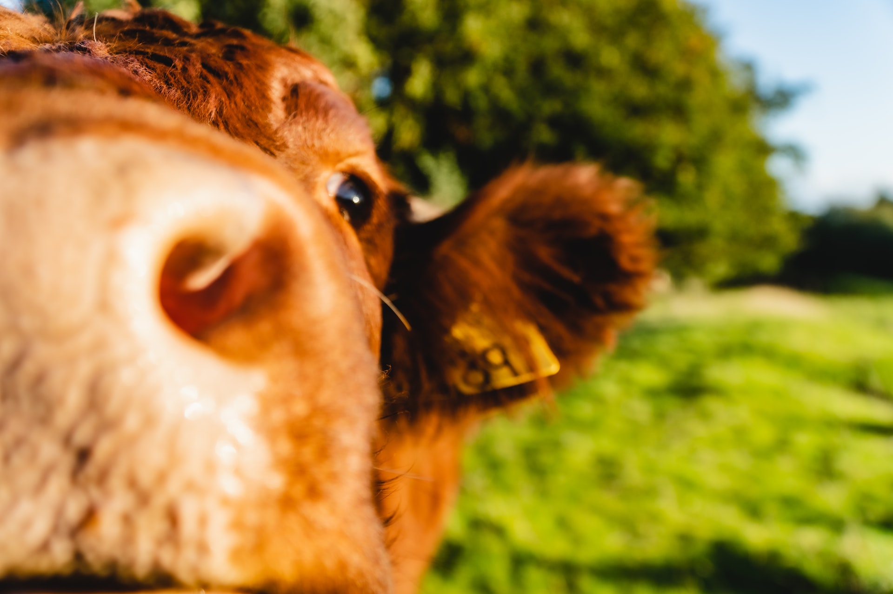

Acerca de Walden
Fui a vivir a los bosques porque deseaba vivir conscientemente, enfrentar los hechos esenciales de la vida, y ver si podía aprender lo que ella tenía para enseñar, y no, al momento de mi muerte, descubrir que no había vivido
Henry David Thoreau
Proyecto Walden nace como la expresión de un fuerte deseo de nuestros tiempos: el retorno a la naturaleza. Sabemos que el sistema actual no es sustentable en el largo plazo, por tanto, la pregunta no es si debemos cambiar, sino con qué velocidad debemos hacerlo para no desaparecer como raza. Somos una alternativa no-radical de cambio, sabiendo que el sistema actual tiene muchas cosas buenas con las que debemos quedarnos, así como muchas otras malas que es urgente cambiar.
No somos un simple grupo de gente que predica y se cambia de vestimenta cuando vuelve a su hogar, por el contrario, somos un grupo de gente muy convencida y vivimos acorde a lo que predicamos.

Objetivos
- Crear conciencia sobre la problemática del medio ambiente
- Enseñar un modo de vida feliz y sustentable
- Hacer de la problemática ambiental el principal debate de la sociedad
- Ayudar mediante colaboración activa a crear un medio ambiente limpio
- Promocionar productores y productos ecológicos
- Poner a disposición del público en general información seria
- Ser parte de la solución y no del problema
- Empujar el avance de leyes y medidas contra la contaminación en todas sus formas
- Ser solidarios con la sociedad de una manera sustentable

Principios
- No violencia: no creemos en la violencia como motor de cambio
- Desobediencia civil: nuestro modo predilecto de protesta
- No falsedad: siempre esgrimiremos argumentos respaldados por la comunidad científica
- Basados en plantas: no se comerá ningún producto de origen animal en nuestras sedes
- Minimalisto: creemos que menos es más
- Civilidad: fomentamos el diálogo constructivo y la escucha
- Paz: fomentamos la paz en cada una de las facetas de la vida de nuestros integrantes